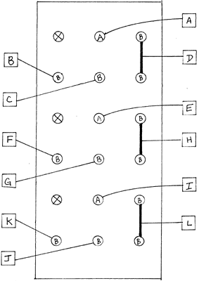

|
Triple Waveshaper
 pc board No. R5 Needed to test this module is a VCO or a self-cycling POSITIVE SLEW. Also needed is a control voltage source which may be manually operated such as is available from the PROCESSOR or PROGRAMMER, or automatic, i.e. such as is available from any of the SLEWS, the ENVELOPE: GENERATOR, etc... in a self-recycling mode of operation. Plug an audio frequency sawtooth wave as available on the VCO or the POSITIVE SLEW into the WAVESHAPER's main input (diamond). Choose the top-most WAVESHAPER for this. Patch that WAVESHAPER's output (two jacks inside the rectangle on the right of the module) into a suitable monitor amp. Turn the WAVESHAPER's knob to about 2 o'clock. A triangle type sound should result. Plug the control voltage source into the WAVESHAPER's input "VC1". Assuming that this source is changing from a minimum of 0V to+5V, you should hear the triangle wave progressively change shape to a sawtooth wave. Un-patch VC1 and re-patch the control voltage source into VC2. The resulting effect as the control voltage moves through its range is sound resembling a mild form of pulse-width modulation, with a phasing type sound that sweeps upwards in harmonic content as the voltage goes from 0V to+5 V. The output may blank out. Should that happen, it means that you have not set the knob CW enough. Blanking may occur because the action of VC2 as it increases towards +5 V is to gradually clip more and more of the wave. If the input knob is not set high enough, the clipping process will effectively clip all of the effect. Testing the two other WAVESHAPERS may proceed as. outlined in the steps listed above.
|